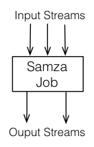
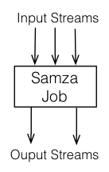
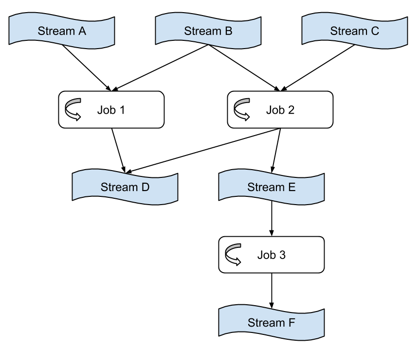

samza
http://samza.incubator.apache.org/
Samza is made up of three layers:
samza架构和hadoop-mapreduce架构非常类似. 1)从kafka读取数据 2)经过samza-api进行处理 3)将输出写入kafka.
 

因为samza架构借鉴了hadoop-mapreduce架构, 所以许多术语也沿用下来了.
- partition # kafka内部就对message-stream进行了partition.
- job & task # 一个task对应一个input partition. 所以job的task数量由kafka topic的partition数量决定.
- container # 使用yarn来对每个task进行资源管理.
通过streaming-layer将jobs串联起来组成dataflow-graphs.

关于state管理问题, samza-api层面提供了local-storage接口, 但是这个接口其实没有解决太多问题. 使用这个local-storage接口虽然可以在本地存储部分状态数据来减轻对remote-storage的压力, 但是如果task失败的话 samza并不负责这个local-data的迁移. 所以一些关键性的数据还是必须存储在remote-storage上比如当前处理的message-id等.